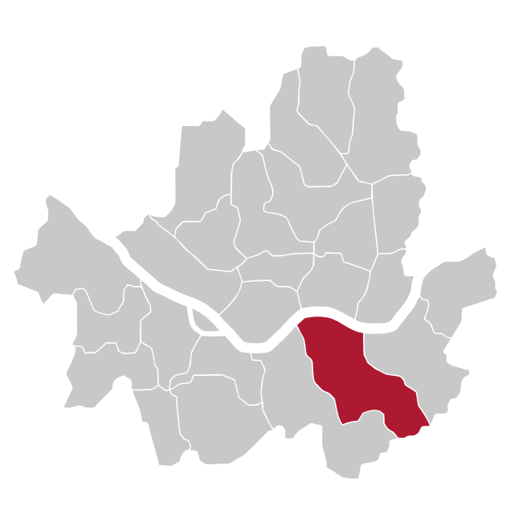
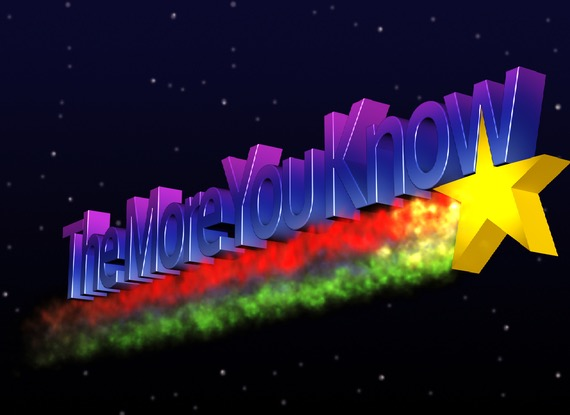
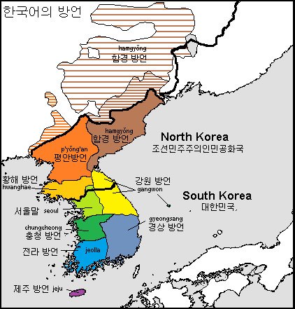
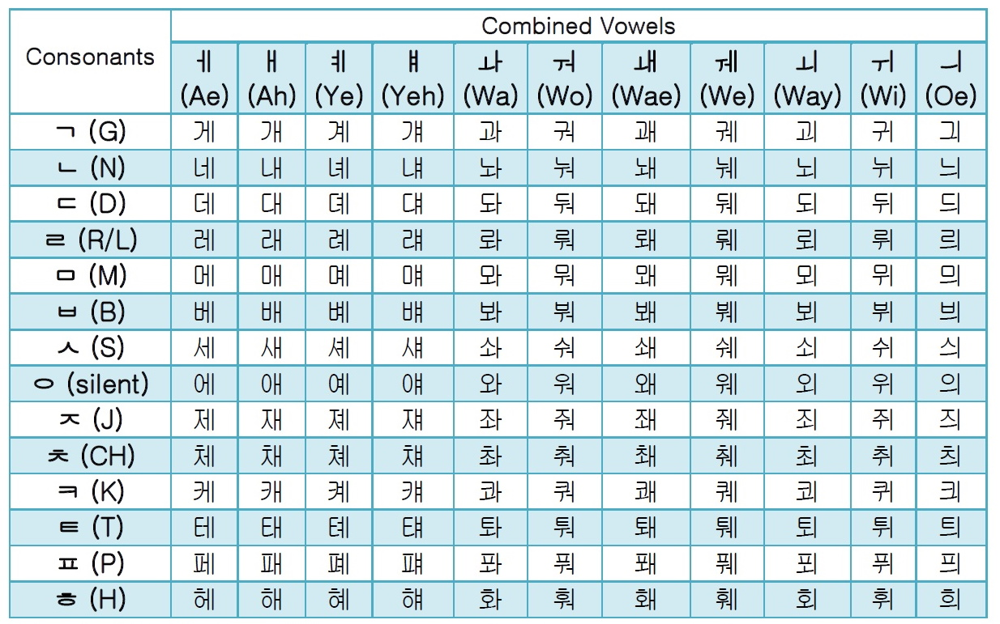
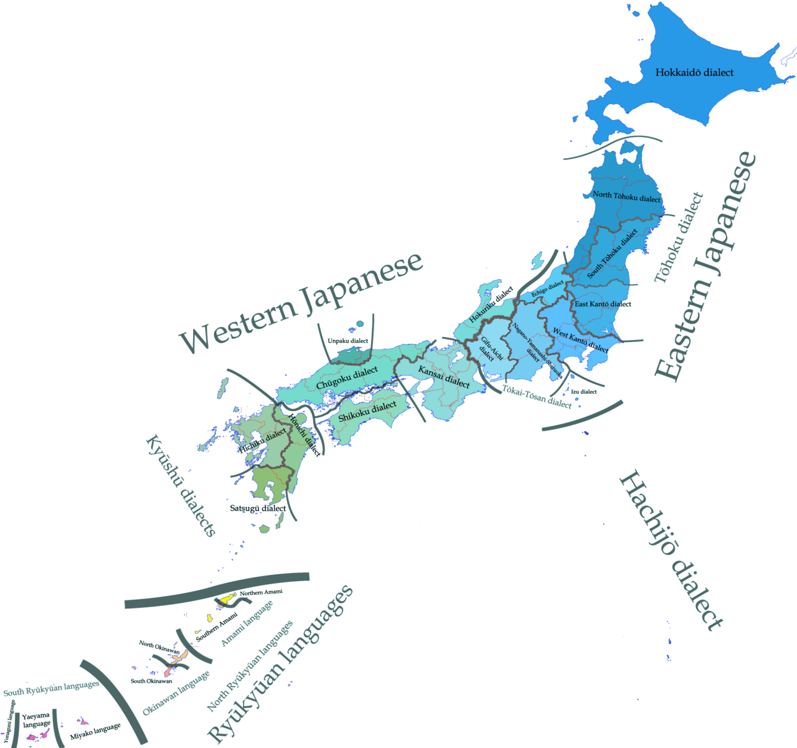
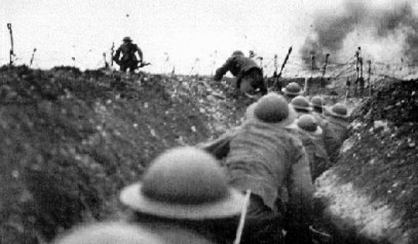
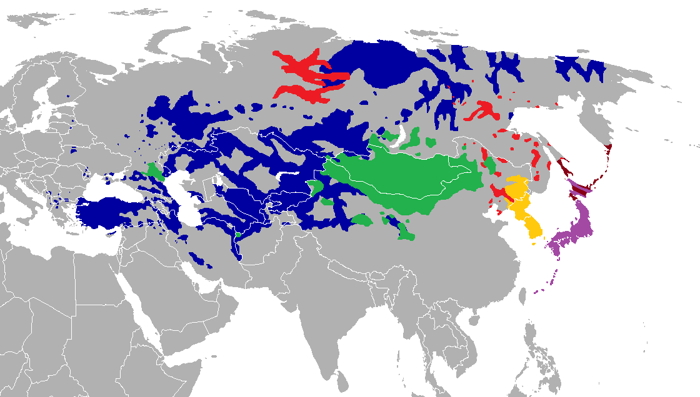
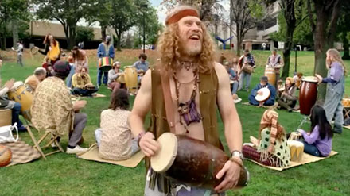
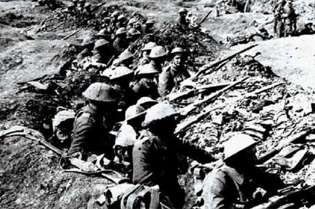

<lang>Korean</lang><br><ldata>Koreanic - Korea</ldata> <iframe data-autoplay width="840" height="500" src="http://www.youtube.com/embed/9bZkp7q19f0"></iframe> Psy - Gangnam Style --- ### Fact of the Day "Gangnam" is a wealthy area of Seoul, known for a very high standard of living  --- ### Fact of the Day "Gangnam" is a wealthy area of Seoul, known for a very high standard of living ... and "Oppa" is the "Older Brother" honorific kinship term used by a younger woman to an older man * So, he's saying to his young, female audience "Hey, this respected older man is Gangnam Style." ---  --- ### Administrative Notes * Will's office hours are cancelled tomorrow and next week. Sorry! * Material from guest lectures is totally test-eligible * Remember, the slides are online * ... and if you use "print" or "View Source" in Chrome, you can copy-paste the text into your notes --- # Japanese, Korean, and "Altaic" ### LING 1020 - Will Styler --- ### Today's Agenda * Korean * Japanese * "Altaic" --- ### Today, we're going to be seeing a lot of Honorifics! --- # Korean ---  --- ### Korean * Some say it's an isolate, others say it's "Altaic" * We'll get there. * Spoken by around 80 million people --- ### Features of Korean * Agglutinative, SOV * Vowel length and Vowel Harmony * Hangul Writing System * "Faucalized" or "Tense" consonants * Honorifics --- ### We know all about Agglutination, SOV order, Vowel Length and Vowel harmony * So, let's jump to the fun stuff --- ## Hangul Writing System --- ### Korean used to use *hanja*, an ideographic writing system --- ### Ideographic Writing System Each concept or word has a symbol, with no correspondence to sound --- <section data-background="lotwimg/chinesetattoos.jpg"></section> --- ### Ideographic Writing System Each concept or word has a symbol, with no correspondence to sound <danger>What are some problems with using an ideographic writing system?</danger> --- ## Hangul Writing System * Created by Sejong the Great in 1443 * Replaced the Hanja ideographic writing system * Which was originally adapted from Chinese characters * This is a *really* slick writing system * It's a deeply *phonetic* alphabet --- ### Hangul is Phonetic! * Velar consonants (아음, 牙音 a-eum "molar sounds") * ㄱ g [k], ㅋ k [kʰ] * Coronal consonants (설음, 舌音 seoreum "lingual sounds"): * ㄴ n [n], ㄷ d [t], ㅌ t [tʰ], ㄹ r [ɾ, l] * Bilabial consonants (순음, 唇音 suneum "labial sounds"): * ㅁ m [m], ㅂ b [p], ㅍ p [pʰ] * Sibilant consonants (치음, 齒音 chieum "dental sounds"): * ㅅ s [s], ㅈ j [tɕ], ㅊ ch [tɕʰ] * Dorsal consonants (후음, 喉音 hueum "throat sounds"): * ㅇ ng [ʔ, ŋ], ㅎ h [h] --- ### Syllable blocks are constructed by combining consonant symbols and vowel symbols  --- **English** All human beings are born free and equal in dignity and rights. They are endowed with reason and conscience and should act towards one another in a spirit of brotherhood. **Korean** 모든 인간은 태어날 때부터 자유로우며 그 존엄과 권리에 있어 동등하다. 인간은 천부적으로 이성과 양심을 부여받았으며 서로 형제애의 정신으로 행동하여야 한다. --- ### Which East Asian Language am I looking at? * Japanese has small, curvy strokes with interspersed complex characters * Chinese has mostly square-ish, complex characters. * Korean has lots of circles and horizontal/vertical lines. --- <section data-background="img/clickerbkgrnd.png"></section> すべての人間は、生まれながらにして自由であり、かつ、尊厳と権利と について平等である。人間は、理性と良心とを授けられており、互いに同 胞の精神をもって行動しなければならない。 is... A) Chinese B) Korean C) Japanese * <correct>See the mix of curves and characters? Japanese!</correct> --- <section data-background="img/clickerbkgrnd.png"></section> 모든 인간은 태어날 때부터 자유로우며 그 존엄과 권리에 있어 동등하다. 인간은 천부적으로 이성과 양심을 부여받았으며 서로 형제애의 정신으로 행동하여야 한다. is... A) Chinese B) Korean C) Japanese * <correct>Lots of circles, and straight lines! Korean!</correct> --- <section data-background="img/clickerbkgrnd.png"></section> 人 人 生 而 自 由, 在 尊 严 和 权 利 上 一 律 平 等。 他 们 赋 有 理 性 和 良 心, 并 应 以 兄 弟 关 系 的 精 神 相 对 待。 is... A) Chinese B) Korean C) Japanese * <correct>That's a lot of complex characters. Chinese!</correct> --- ## Tense Consonants! --- ### Korean Tense Consonants * When Korean speakers do... something... during consonants * These are sometimes called "Double consonants" * We linguists have little idea what's going on here * Maybe pitch? Sub-glottal pressure? --- # ㅅ vs. ㅆ <audio data-autoplay src="phonmedia/faucalized.mp3"></audio> --- ## Honorifics! --- ### Korean Honorifics * In Korean, verbs and adjectives take different morphemes marking relative social status * There are 7 different sets of verb conjugations based on formality * Different affixes and pronouns create different "speech levels" --- ### Korean Speech Levels * -ㅂ니다 - Honorific, Most Polite, Most Formal * -(아/어/여)요 - Polite, natural, a bit formal * -아/어/여 - Casual, Informal or Intimate * Usually used for younger people or close friends * You can ask permission to switch to this style --- ### Many Languages have formal vs. informal forms of address! --- The most common is called the "T/V Distinction", where there's a simple "formal" and "informal" form --- <style type="text/css"> .tg {border-collapse:collapse;border-spacing:0;} .tg td{font-family:Arial, sans-serif;padding:10px 5px;border-style:solid;border-width:1px;overflow:hidden;word-break:normal;} .tg th{font-family:Arial, sans-serif;font-weight:normal;padding:10px 5px;border-style:solid;border-width:1px;overflow:hidden;word-break:normal;} .tg .tg-e3zv{font-weight:bold} </style> <table class="tg"> <tr> <th class="tg-031e"></th> <th class="tg-e3zv">Spanish</th> <th class="tg-e3zv">French</th> <th class="tg-e3zv">Russian</th> <th class="tg-e3zv">German</th> </tr> <tr> <td class="tg-e3zv">Formal</td> <td class="tg-031e">Usted</td> <td class="tg-031e">Vous</td> <td class="tg-031e">Вы</td> <td class="tg-031e">Sie</td> </tr> <tr> <td class="tg-e3zv">Informal</td> <td class="tg-031e">Tu</td> <td class="tg-031e">Tu</td> <td class="tg-031e">Ты</td> <td class="tg-031e">Du</td> </tr> </table> --- <lang>Archaic English</lang><br><ldata>IE:Germanic - Shakespeare and the KJV Bible</ldata> * Thou lovest Enchiladas * You love Enchiladas * **Thou is informal!** --- * <danger>What *use* can you see for such an honorific system in language?</danger> --- # Japonic Languages --- ### Japonic Languages * Maybe be a top-level language, may be Altaic * Main branch: Japanese (and its dialects) - Spoken by 125 Million People * Other branch: Ryūkyūan languages * These are all endangered. :( ---  --- <lang>Okinawan</lang><br><ldata>Japonic:Riyukyuan - Okinawa</ldata> <iframe data-autoplay width="840" height="500" src="http://www.youtube.com/embed/FcaMDJ9eBNA"></iframe> --- ### Features of Japanese * SOV word order, agglutinative * CVCVCV Syllable Structure * The Japanese "R" * Extensive use of particles * Extensive Honorific System --- ## Preference for CVCV --- <lang>Japanese</lang><br><ldata>Japonic - Japan</ldata> <img src="phonmedia/japanese_christmas.jpg"> ‘Merry Christmas' - merii kurisumasu <small>([Image and Sound Credit](http://japanese.about.com/library/blqow33.htm))</small> * *Japanese does not allow anything but consonant-vowel-consonant-vowel* <audio data-autoplay src="phonmedia/japanese_christmas.mp3"></audio> --- ## The Japanese "R" --- Japanese and Korean speakers often struggle with the English "L" and "R" * ### This is because Japanese and Korean have neither and both! --- The English R (/ɹ/) is an Alveolar Approximant * The English L (/l/) is an Alveolar Lateral Approximant * The Japanese "R" is a postalveolar flap *which is not defined for laterality*. * This means that it can be lateral or not, and nobody cares * The Korean "R" is very similar * Although it's slightly more predictable there. --- When speaking Japanese and Korean, "lateral" is not a meaningful difference. * **When Japanese and Korean speakers speak English, this makes life difficult!** * Japanese and Korean speakers can master our very weird /ɹ/, but it takes time. --- ## Particles --- ### Japanese uses particles to give meaning to words in a sentence * These particles act as a sort of "comment" on the topics raised --- <lang>Japanese</lang><br><ldata>Japonic - Japan</ldata> **dokoro ka** - "Anything but" or "Far from" *Kare wa keisatsukan **dokoro ka**, hanzaisha da.* he be policeman dokoro ka, criminal be. "Far from a policeman, he's a criminal!" --- <lang>Japanese</lang><br><ldata>Japonic - Japan</ldata> **ka na** - "I wonder" (but I strongly suspect) *Kare wa ayashii hito **ka na**.* He be suspicious person ka na. "I'm starting to wonder if he's a suspicious person. --- <lang>Japanese</lang><br><ldata>Japonic - Japan</ldata> **nanka** - Shows disgust *Jogen **nanka** iranai.* Advice nanka I.need.not "I don't need any (damn) advice!" --- ## Japanese Honorifics --- ### Honorifics in Japanese * Word beautification (Adding prefixes to words to make them more "beautiful") * Politeness registers * Honorific Verb forms * Honorific Titles --- ### Politeness Registers * Many different ways to say "I ask you for a favor" * **Between friends** - yoroshiku tanomu. * **Polite** - yoroshiku tanomimasu * **Business Formal** - yoroshiku onegai shimasu * **Humble Formal** - yoroshiku onegai itashimasu. * **Super-Polite formal** - yoroshiku onegai mōshiagemasu. --- ### Honorific Verb Forms Different verbs are used depending on how polite you're being --- ### Politeness forms of "To Eat" * Dictionary: Tabe-ru. 食べる * Neutrally polite: Tabe-masu. 食べます * Kinda polite: Tabe-rare-masu. 食べられます * Super polite: Meshi'agari-masu. 召し上がります * Humble: Itadaki-masu. 頂きます --- ### If you're being polite, you may need to use an entirely different verb to say the same thing! --- ### Honorific titles * San (Title of respect between people of any age) * Sama (People much higher in rank than yourself) * Kun (People of lower rank, or close friends) * Chan (Diminutive) * Sensei (Teachers, doctors, politicians) * Shi (People you've never met but respect) --- ### There's [a great deal more to Formality in Japanese](http://en.wikipedia.org/wiki/Honorific_speech_in_Japanese) * ... but we never have time *nanka*. * That's the disgust particle. Get it?! --- <lang>Japanese</lang><br><ldata>Japonic - Japan</ldata> <iframe data-autoplay width="840" height="500" src="http://www.youtube.com/embed/IHA9FS3D9vw"></iframe> --- "Wow, there sure are a lot of similarities between Japanese and Korean" * **Maybe they're related!** --- # Altaic  --- ### "Altaic" * A proposed top-level family like Indo-European * Attempts to unite Turkic, Mongolic, Tungusic, Koreanic, Japonic, and Ainu * Still rather controversial * Yelling "Altaic is historically accurate" is a great way to start a fistfight at an LSA conference * Two proposed groupings: "Macro-Altaic" and "Micro-Altaic" --- **Macro-Altaic**: Turkic, Mongolic, Tungusic, Koreanic, Japonic, Ainu  (Blue, Green, Red, Yellow, Purple and Maroon, respectively) --- **Micro-Altaic**: Turkic, Mongolic, Tungusic (Blue, Green, and Red respectively) --- ### My Deepest Apologies to Mongolic, Tungusic, and Ainu * These are all awesome language families, we just don't have the time. --- ### Macro- and Micro-Altaic * There's more evidence for Micro-Altaic than for Macro- * Ethnologue includes Micro-Altaic, but not Macro * Most Altaic supporters now believe in Macro-Altaic * Many people still believe in neither! --- ### "Why can't we all just get along?"  --- ### The Altaic Controversy * **Pro-Altaic** - "These similarities come from genetics" * **Anti-Altaic** - "These similarities come from contact and borrowings" * <danger>Why is this debate difficult to prove or win?</danger> --- ### People are pretty much dug in  --- ### So, is Altaic real, or not? * ## Maybe. * ... but even if it isn't, it's useful to know that the "Altaic" languages share some similarities * ... and you should probably know what families may be Altaic for the test... --- ### Wrapping Up * Korean is awesome. * ... and has tons of Honorifics * Japanese is awesome * ... and has tons of Honorifics * Altaic may be a top-level language family * * ... and it's nice to know about, in case you ever need to make a quiet escape from a typology conference --- ## In Recitation * Restoring Honor(ifics) to English * <danger>HW4 is due in Recitation!</danger> --- ## Next time: Austronesian Languages (with Niloo!) <correct>Read Pereltsvaig Ch. 8</correct> --- <huge>Thank you!</huge> ---